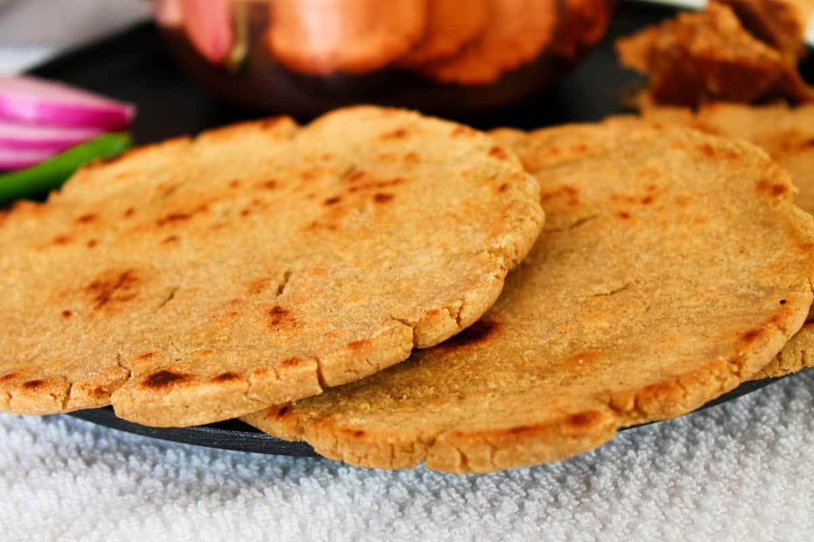

Maharashtrian Food
Puran Poli

Ingredients: Wheat flour, Jaggery, Split gram.
Recipe: Prepare dough, fill with puran, roll and cook.
Vada Pav

Ingredients: Potatoes, Bread, Spices.
Recipe: Prepare vada, serve in bread with chutney.
Misal Pav
Ingredients: Sprouts, Spices, Bread.
Recipe: Cook sprouts with spices, serve with bread.
Bhakri
Ingredients: Jowar flour, Water.
Recipe: Prepare dough, roll, and cook on a griddle.
Sabudana Khichdi
Ingredients: Sabudana, Peanuts, Spices.
Recipe: Soak sabudana, cook with peanuts and spices.